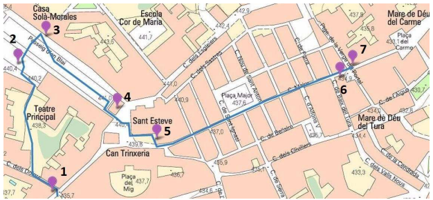

Volcán Santa Margarita · Fageda d'en Jordà · Castellfollit de la Roca
Fonda Ca La Paula · Castellfollit de la Roca
Plaça Sant Roc 3, Castellfollit de la Roca · Tel. 972 29 40 32 · 12 km · 12 min desde Santa Pau
Volcán de Santa Margarita
Uno de los volcanes más emblemáticos de la Garrotxa. Entró en erupción hace 11.000 años y tiene una altitud de 700 metros. Su extensa boca es hoy un gran prado de 2.000 metros de perímetro desde el que se disfrutan vistas increíbles. En medio de la llanura del cráter se alza la iglesia de Santa Margarita, de origen románico, que da nombre al volcán. Hay que hacer el ascenso a pie: una cuesta accesible sin problemas.
La Fageda d'en Jordà — Visita a la granja
Un proyecto social único: granja que integra a personas con discapacidad intelectual. La visita guiada incluye una explicación del proyecto y sus novedades, visita a la granja con las terneras y las vacas adultas y los robots de ordeño, conocer la fábrica y el obrador de mermeladas desde un pasillo exterior, y al final un vídeo sobre el proyecto y degustación de los postres de La Fageda.
Restaurante del Camping La Fageda
Tel. 972 27 38 11 / 631 475 407
Santa Pau
Pueblo medieval desde donde se contemplan panorámicas espléndidas sobre el valle del Ser. En un día claro, desde el Portal del Mar, se puede ver el golfo de Roses y el mar.
Casco antiguo con edificios singulares: el Castillo construido en los S.XIII-XIV; la Plaza porticada o Firal dels Bous, que servía de cobijo al mercado; la iglesia gótica de Santa María de una sola nave; y el mirador sobre el valle del Ser.
Bosque de hayas — La Fageda d'en Jordà
Crece sobre la colada de lava del volcán Croscat, en un lugar plano a 550 m con colinas suaves. Un laberinto interminable de árboles y hierbas salido de un cuento de hadas que fue fuente de inspiración para el poeta Joan Maragall. El bosque está rodeado por 21 de los volcanes de la comarca.
Desde el aparcamiento se cruza la carretera y unas escaleras dan acceso a la Fageda. Antes de bajarlas, a mano derecha, el monolito en memoria de Joan Maragall con el famoso poema que le inspiró este bosque. El sendero lleva hasta el pie de un gran tossol, se rodea completamente y se regresa por el mismo camino.
Castellfollit de la Roca — El pueblo sobre el riscal
Uno de los municipios más pequeños de Cataluña. Se levanta sobre una pared basáltica de origen volcánico, consecuencia de la acción erosiva de los ríos Fluvià y Toronell sobre los restos volcánicos de hace miles de años. La pared tiene casi 60 metros de altura por casi 1 km de longitud.
Mirador sobre la pasarela del río Fluvià (900 m · 14 min): vistas impresionantes del pueblo desde el río. En el camino desde el casco antiguo al mirador del cingle, un pequeño puente metálico de gran composición con el entorno, sustituto del antiguo puente gótico del S.XIV destruido por las inundaciones de 1970.
Torre del Reloj
Uno de los monumentos más emblemáticos del pueblo. Construida en 1925, dicen que como promesa electoral del diputado Lluís Pons i Tusquets. Destaca su fuente inferior con una imagen de San Roque (1885), el escudo de armas del pueblo y el reloj en la parte superior.
💡 Si te fijas en la esfera verás que el 4 está representado como IIII (4 barras) y no como IV. Aunque parezca un error, muchos relojes de la época marcaban así este número.
Iglesia de Sant Salvador — Església Vella
Antigua iglesia parroquial de la localidad. Las primeras referencias son del S.XII aunque lo actual es fruto de varias reconstrucciones por guerras y terremotos. Destaca su fachada de estilo renacentista tardío y el campanario de planta cuadrada. Se puede subir al campanario para observar interesantes vistas del paisaje y del casco antiguo.
Junto a ella, la pequeña Plaza de Josep Pla con bonitas vistas del valle y de las montañas del horizonte. Hasta 1961 fue el cementerio del pueblo.
Restaurante del hotel Fonda Ca La Paula
Sant Joan les Fonts · Olot · Besalú
Hostal Mas Ferrer
17 km · 16 min desde Besalú
Cingles Basàltics de Fontfreda — Sant Joan les Fonts
Excursión por los impresionantes escalones y paredes de roca basáltica de origen volcánico que el río Fluvià ha tallado a su paso por Sant Joan les Fonts.
Iglesia de Sant Esteve
La principal y más impresionante de Olot. Su fachada principal, del año 1800, tenía tres hornacinas con imágenes de piedra de Sant Esteve, Sant Valentí y Santa Sabina, destruidas en 1936. Actualmente está en obras.
Iglesia de la Mare de Déu del Tura
Santuario de la patrona de Olot. De la primitiva iglesia solo se conserva la talla románica de la Verge del Tura.
Claustros del Carme
Construido a finales del S.XVI. Lo forman dos plantas proyectadas por Llàtzer Cisterna. Uno de los pocos claustros renacentistas conservados en Cataluña y declarado Bien Cultural de Interés Nacional. Actualmente es la sede de la Escola d'Art i Superior de Disseny d'Olot.
Ruta del Modernismo de Olot
Ruta por el centro histórico donde se concentran los edificios modernistas. Ejemplos destacados: Casa Solà-Morales (Domènech i Montaner), Casa Pujador (Azemar), Casa Escubós, Casa Gassiot y Casa Gaietà Vila (Paluzie). La ruta se inicia en la oficina de turismo de Olot.

Mapa de la Ruta del Modernismo de Olot · Fuente: Oficina de Turismo de Olot
Restaurante Curia Real · Besalú
Plaça de la Llibertat 8-9 · Tel. 972 59 02 63 · Código reserva: qv6p71gy
Edificio histórico de transición del románico al gótico (S.XIII-XIV), uno de los más emblemáticos de la arquitectura civil de Besalú. Fue sede de la vegueria, palacio de justícia y Cort Reial, y más tarde convento de monjas del Cor de Maria. Habilitado como restaurante desde 1977.
Puente Románico de Besalú
El emblema de Besalú. Construido en el S.XI con 105 metros de largo y una gran torre hexagonal de 30 metros que emerge sobre uno de los pilares centrales. Siete arcos desiguales sobre el río y dos torres. En la torre central se instaló el pagus condal (peaje medieval) que controlaba el acceso de comerciantes a la villa.
La última gran reconstrucción fue tras la Guerra Civil, cuando el puente fue dinamitado y se destruyeron varios de sus arcos.
Barrio Judío (Call) y Miqve
Perderse por sus estrechas callejuelas empedradas que fueron hogar de una importante comunidad judía entre los S.IX y XV (expulsados por los Reyes Católicos). Las sillas de Besalú son esculturas que encontrarás paseando.
Los restos de los muros de la antigua sinagoga (documentada en 1264) y el acceso a la miqve (12:00-13:30h): baños de purificación ritual en el judaísmo. La visita solo se hace de forma guiada a través de la oficina de turismo. Descubierta en 1964, es el único edificio de estas características en España y el tercero en importancia de toda Europa, de los 10 conocidos en el mundo.
Monasterio de Sant Pere · Plaça Prat de Sant Pere
Presidiendo la plaza principal de Besalú. Fundado en el año 977 por el conde obispo Miró. Fue uno de los monasterios con más influencia del país. Hoy solo se conserva la iglesia de todo el conjunto inicial: destaca el ventanal escoltado por 2 leones en su sencilla fachada. En el interior, las tumbas de varios abades de su época de esplendor.
En la misma plaza: la Casa Cornellà y el antiguo Hospital de Sant Julià con fachada del S.XII.
Iglesia de Sant Vicenç
Actual iglesia parroquial de Besalú. Edificio románico de finales del S.X con algunos elementos del gótico que ya asomaba por Europa. Interior de planta basilical con tres naves, crucero y tres ábsides semicirculares. En su interior, la tumba gótica de Pere Rovira, quien llevó a Besalú los restos de San Vicente.
Colegiata de Santa Maria
Los únicos restos que quedan del antiguo castillo de Besalú. Buen lugar para sentarse a tomar algo en la Plaça Prat de Sant Pere o la Plaça Llibertat.
Lago de Banyoles · Vic
Lago de Banyoles
De origen kárstico, el lago más grande de Cataluña. La actividad más típica es dar la vuelta completa: 7 km en ruta circular, ~1h 30 min, siguiendo el sentido de las agujas del reloj desde la Oficina de Turismo.
Durante el trayecto se encuentran las pesqueras: construcciones de mediados del S.XIX y principios del S.XX que la burguesía usaba para bañarse, pescar y guardar las barcas. Casi al final del camino, el Poblado Neolítico de la Draga.
⚠️ Está prohibido bañarse salvo en los sitios autorizados. La barca Tirona (catamarán eléctrico, 80 personas) ofrece recorridos de 40 min. Lunes: cerrado.
Plaza Mayor de Vic — Plaça del Mercadal
La plaza no está asfaltada: es de tierra, y en ella se pueden ver dibujadas las formas de los puestos del mercado semanal. A la entrada destaca la Casa Comella por la belleza de su fachada. El Ayuntamiento: la parte más antigua es el edificio del S.XIV donde hoy está la Oficina de Turismo (la Llotja del Blat, espacio donde se vendía carne, pescado y se pesaba el trigo).
Casa Cortada — C/ Ciutat 4
Ejemplo característico de las casas señoriales barrocas de Vic. Austera por fuera, conserva por dentro el mobiliario y la decoración originales con pinturas murales de Francesc Pla, El Vigatà (1743-1805), considerado el pintor catalán más interesante del último cuarto del S.XVIII. Las pinturas narran las aventuras de Telèmac, hijo de Ulises, en muy buen estado de conservación.
Catedral de Sant Pere de Vic
Abierta de lunes a domingo de 10:00-13:00h. El campanario (el más alto de Cataluña de estilo románico) y la cripta son joyas del S.XI que se conservan desde su construcción.
En el interior, todas las paredes están cubiertas de murales pintados por Josep Maria Sert. Los originales del 1900 fueron destruidos en la Guerra Civil. Fue el bisbe Oliba quien construyó la catedral románica en el S.XI; con el tiempo fue ampliándose hasta que en el S.XVIII se construyó el gran templo neoclásico. A principios del S.XX, Sert recibió el encargo del bisbe Torras i Bages de decorar el interior.
Pont de Queralt y Muralla de Vic
Antiguo puente de entrada a la ciudad cuando estaba amurallada. D'estil romànic, construït al S.XI, donava accés al portal de la muralla. Fins al 1274 per entrar a Vic, venint de Barcelona, s'havia de passar per aquest pont. Para llegar se pasa por una zona donde aún se aprecia bien la antigua muralla y los edificios de las antiguas curtidoras de piel, negocio muy importante en la Edad Media por la cercanía al río.
Templo Romano — El Castell dels Montcada
Con la ocupación romana se construyó un templo en el S.II d.C. en el punto más alto de la ciudad. Ocultado por pura casualidad: sus muros fueron usados para construir el castillo de Montcada y el templo quedó "escondido" dentro. No fue hasta el S.XIX, al derruir el castillo, cuando lo encontraron en su interior. Fue consagrado al culto al emperador y es el único edificio recuperado de la ciudad de Auso.
💡 Si te fijas en las columnas, podrás ver balazos de metralla de la Guerra Civil.
Museo Episcopal de Vic
El museo más importante de la ciudad. Una de las colecciones de arte románico catalán más importantes de toda Europa, con 20.000 piezas. Inaugurado en 1891, desde 2002 en un edificio muy moderno justo al lado de la catedral. Lunes cerrado.
Iglesia de la Piedad
Muy cerca del Templo Romano. Iglesia gótica datada del S.XVII, actualmente en obras por deterioro. Sin duda, su fachada es preciosa.
Restaurant L'Ona · Vic
Carrer del Pla de Balenya 22 · Tel. 938 862 598 · Menú 12,50€
Barmutet · Centro de Vic
Bar muy TOP con multitud de marcas de vermut y cosas para picar.